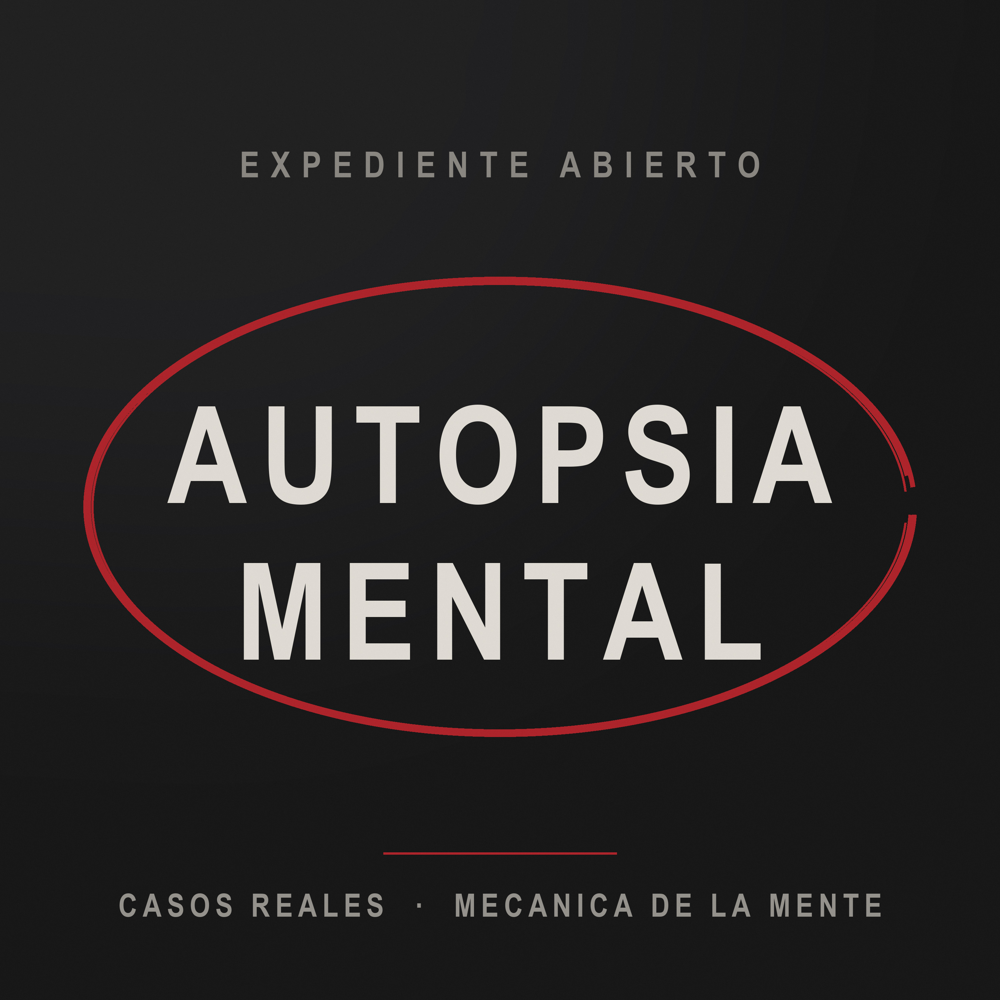

True Crime Forense · Temporada 2
Una reconstrucción forense y psicológica narrada por Marcos Soler, ex-fotógrafo pericial de homicidios con dieciocho años en la escena del crimen. Sin morbo. Con la luz exacta.
Escuchar en Spotify Feed RSSLa policía ve un expediente; el perito ve la copa rota, la luz de las tres de la tarde y el detalle doméstico que el asesino no pensó en limpiar.
No buscamos el shock. Buscamos entender la mecánica fría con la que una persona normal cruza la línea de la que no se vuelve.
Casos verídicos, documentación forense desclasificada y fallos judiciales firmes analizados con precisión milimétrica.